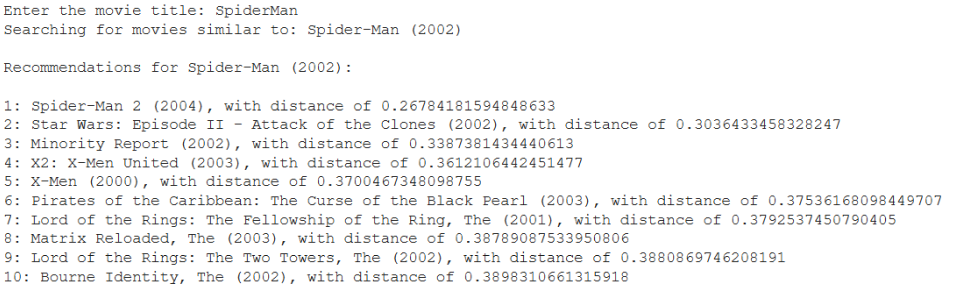

Movie Recommendation System

This movie recommendation system uses machine learning to help users discover new films based on their preferences. By analyzing user ratings and finding patterns in popular movies, it suggests similar titles that match the viewer's interests, delivering personalized recommendations.
Motivation
I created this movie recommendation system to make finding new movies easier for myself and others who love films. I wished for a system that could predict movies I'd enjoy based on my favorites, like Spider-Man (2002). With this project, I aimed to discover films that suit my tastes without endless scrolling. It's a tool that I use to find hidden gems and add movies I might have missed to my watchlist!
Progress
To build my movie recommendation system, I started by gathering movie data, including titles, ratings, and user information. I then cleaned and merged this data to focus on popular titles.

Using techniques like cosine similarity and k-nearest neighbors, I designed a model to recommend movies based on user preferences. By creating a pivot table, I was able to map movies to user ratings, turning this data into a sparse matrix for efficient similarity calculations. Finally, I implemented fuzzy matching to handle user input, allowing my system to find close matches to movie titles and provide relevant recommendations.

Result
To enhance the system, I plan to explore additional recommendation techniques, like collaborative and content-based filtering, to improve accuracy. I'm also considering adding genre-specific filters and user-friendly interface improvements, making the tool even more effective for diverse movie preferences.
Summary
This project is a fun way to combine my interest in data science with something I love - finding new movies to watch! By working through steps like data cleaning, similarity modeling, and creating interactive features, I built a recommendation system that’s actually useful for my own movie nights. It's cool to see how data can help suggest films that match my taste and make exploring new genres way easier.